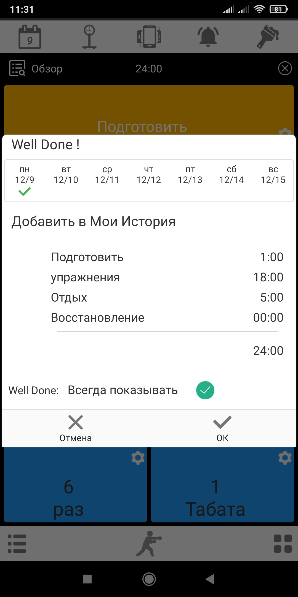
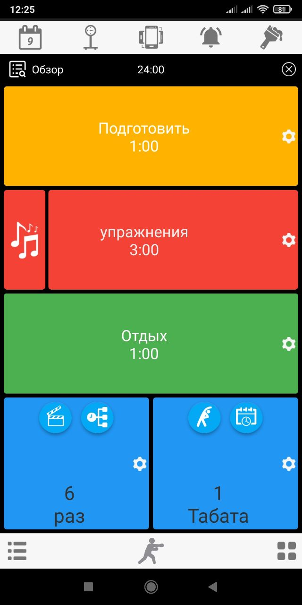

День 1
Итак, поехал сегодня провел первую тренировку из серии: тренируюсь только в упражнении бой с тенью до первого боксерского поединка. Поработал сегодня 6 раундов по 3 минуты с отдыхом между раундами в 1 минуту. После чего поработал еще один раунд в три минуты, отснял видео для своего блога, где применял все элементы которые я прорабатывал в основной тренировке (6рд/3мин/1мин).
В целом, сегодняшняя тренировка шла по следующему принципу:
- Раунд 1 - отрабатываю спонтанные атаки начиная с левого прямого удара.
- Раунд 2 - отрабатываю спонтанные атаки начиная с правого прямого удара.
- Раунд 3 - отрабатываю спонтанные атаки начиная с левого бокового удара.
- Раунд 4 - отрабатываю спонтанные атаки начиная с правого бокового удара.
- Раунд 5 - отрабатываю спонтанные атаки начиная с левого снизу удра.
- Раунд 6 - отрабатываю спонтанные атаки начиная с правого снизу удара.
- В завершении отрабатываю еще один раунд в три минуты для видео.
В своем эксперименте использую Tabata Timer который можно скачать по ссылке: Google Play
Данный таймер мне нравиться своей многофункциональностью, тем что сохраняет историю тренировок, и показывает сколько дней я тренировался в процентном соотношении:
 


9 Декабря 2024
День 0
Принял решение провести эксперимент.
8 Декабря, 2024